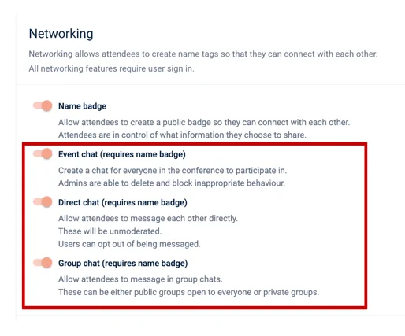
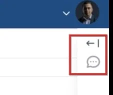
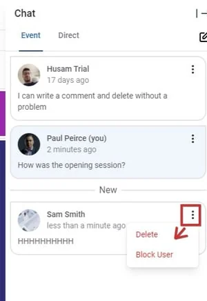
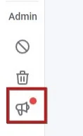
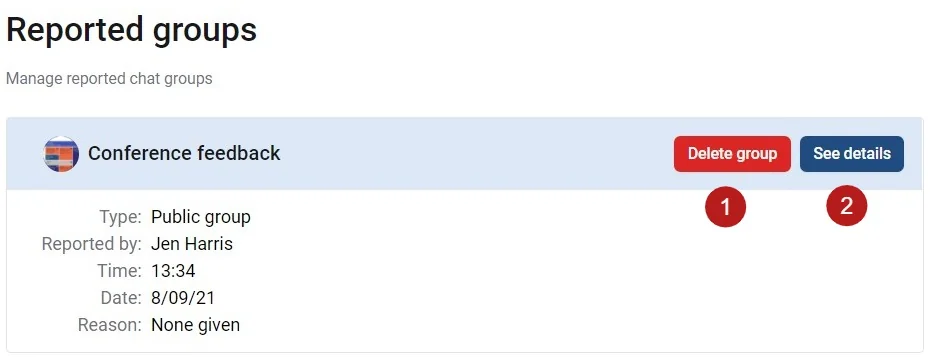
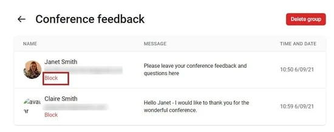
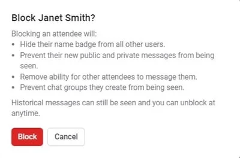

The chat feature
For event organisersNot an organiser?
This feature allows attendees to message each other, and engage in event-wide chat. This feature is only available in the Professional Conference package.#
submitter, reviewer, delegate etc), please click here .
Go to Event dashboard → Conference → Configure → Networking
Make your choice of which chat options you would like to enable. Note - the name badge option must be enabled to permit the chat features.

Once set up, event and private chat can be accessed by your delegates.
 .png?width=688&name=Frame%206%20(1).png)
.png?width=688&name=Frame%206%20(1).png)
See The conference platform - using the chat feature and controlling notifications
for guidance on the chat feature's functionality.
Deleting a message and blocking users
As an admin, you can delete messages and block users from the event chat, should you require.
Log in to the event with your admin email address. In the top right hand corner, click the arrow to expand the chat section.

To the right of each message in the event chat panel, you will see three dots. Click the dots and make your choice from the options. If you block a user, they won't receive notification that they have been blocked. Their messages will just simply not appear in the event chat.

Reported groups
If, in admin view, you see a red dot on the icon shown below, you will have been notified that a user has reported a group. Click on the icon.

You will details of the reported group. You can either
1) Delete the group or
2) Access more details

If you click See details, you can view the group thread. You can then block a user, ir required.

If you choose to block a user, a pop up will display the consequences.

Did this page solve it?
Thanks — this helps us fix it.
Didn't solve it? Ask our support team
No question is too small, and there's no charge for asking. Raise a ticket and someone who knows the software will pick it up.